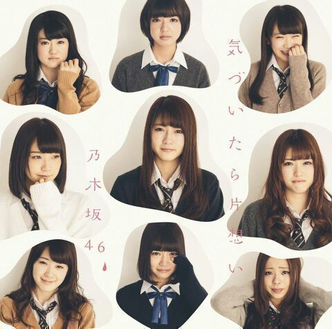
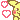

こんにちわ〜♪ ろってぃ−です.!
この制服、何か分かりますかあ？？？
・・・ そうです !!.*
『気づいたら片想い』のジャケット写真の時に使った制服です.*
たたん.♪ 右下です..*

この ろってぃ−の顔がなんとも言えない顔してるんです、、、笑
あみが『あみの変態な時の口みたいだ*^^*』って言っていました.♪ あみらしい例えや.* 本当に面白いこと言う人間だとろってぃ−は思います。てへ
ちなみに、ろってぃ−はこの時どうやって泣いたかと言うと、色々一気に思い出したりサスケとの思い出をカメラに向かって話ながら泣いていました^^
後ろのパネル可愛くないですかあ(*^.^*)？
可愛い,ポップ.♪
あっ、そして昨日の夜中に
録画して見れていなかった『乃木坂って、どこ？』〜マカオ編３週間分〜を一気に見ていました＼(^o^)／
面白かったぁ〜.♪一人でけらけら笑ってました. そして最後に 七瀬よく飛んだね。七瀬がんばった.!! 七瀬大好き。 マカオに行く前 少しだけど、連絡とれてて良かった(о´∀`о)ホッ
番組の終盤には スタジオ収録した『気づいたら片想い』が流れました !! TVで流れるのは初めてでした☆どうでしたか？？
それと もう１つっ ＼(^o^)／
『 NOGIBINGO!2 』です !!!
見てくださった方は もう知っていると思うのですが、
乃木坂クイズ、、、 メンバーの中で一番多く間違えてしまいました. (´；ω；｀)涙
何で bicycleは書けるのに 秋元康先生と秋元真夏の漢字がいつも頭の中でごちゃごちゃになっちゃうんだろう？
って どっちがどっちか分からなくなるって、答えは先生も真夏も同じで元気の『元』なのに、、、
ごめんなさい !!! もうこの先一生間違えません.!
勉強めっちゃしてたあの日々はなんだったんだろう？って自分で思いました(:´*-*)
それでも乃木坂の大好きなことには変わりありません !!!!!! ＼(^o^)／
ワニのお肉食べましたが、なんとも微妙過ぎて何も言葉出てこなかった ！ そしたらかずみんが言ってくれました*^^* 流石 私より２年早く生きてるだけある!!! って思いながらいつもかずみんのことを尊敬してます

てへ
あっ、 ぢゃあ そろそろ休憩時間も終わりなので引き続き頑張ります ！
のし。ろってぃ−..*